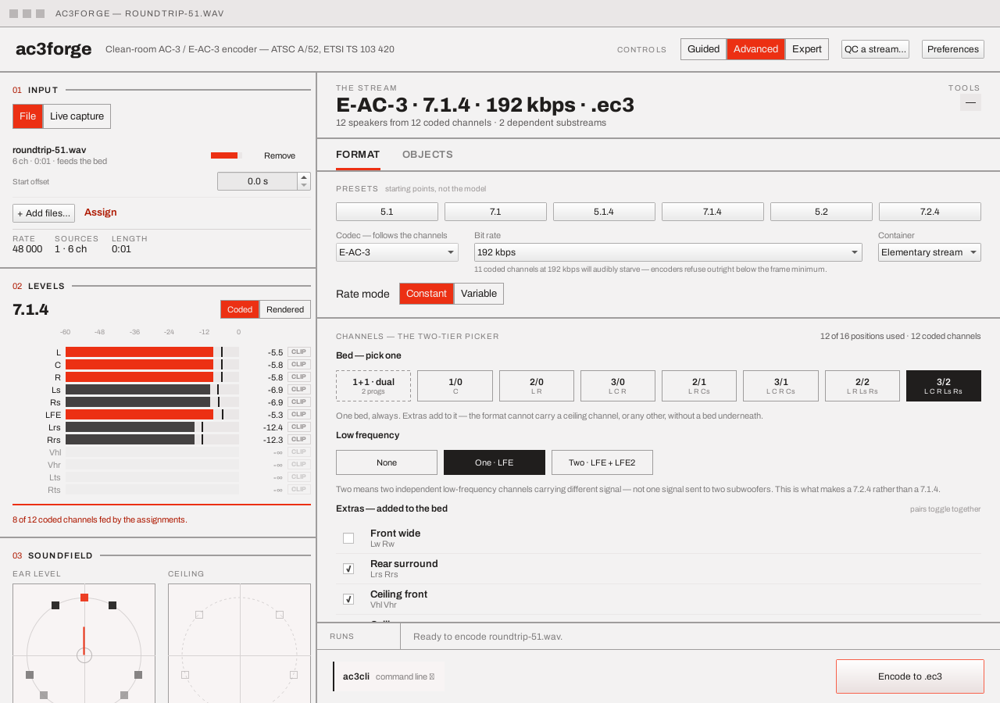
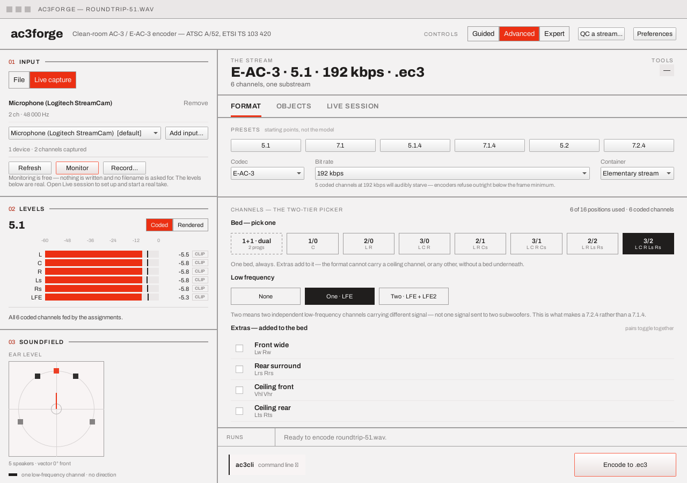
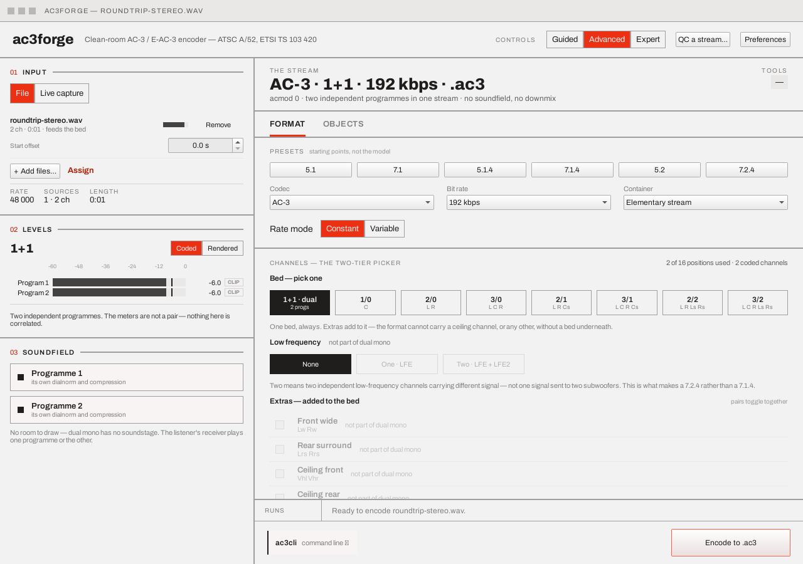
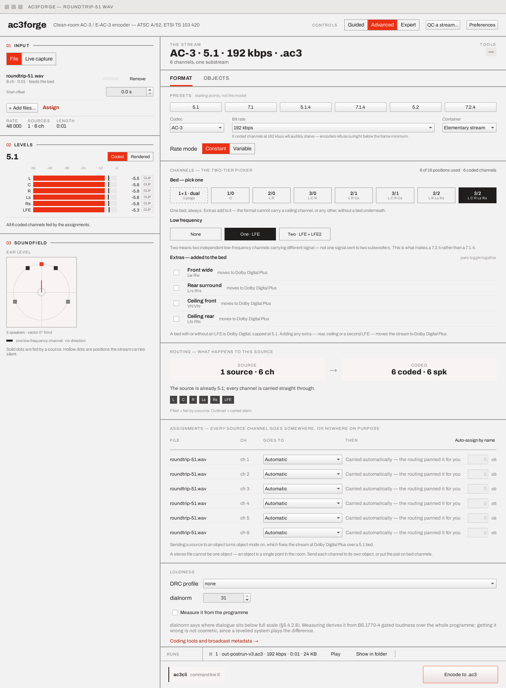
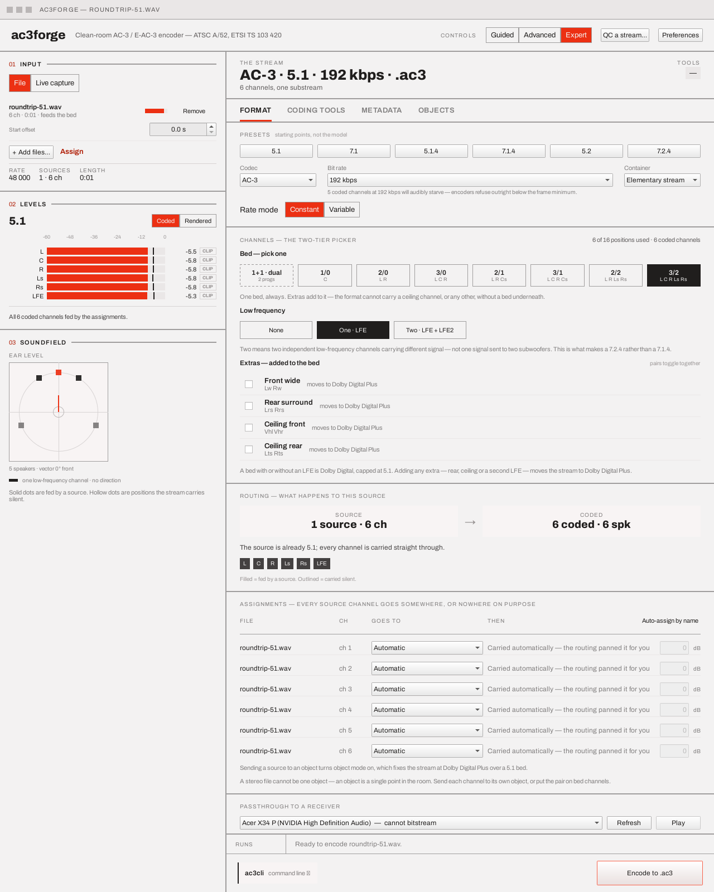

Format & channels¶
The Format tab is the one tab always present in Advanced and Expert — Guided covers the same state through its Speakers and Quality steps instead (see Guided, Advanced, Expert). This page describes the tab, top to bottom: presets and the derived codec, the two-tier channel picker, the routing strip, and the assignment table.
Presets, codec, bit rate, container¶
A row of layout presets (5.1, 7.1, 5.1.4, 7.1.4, 7.2.4 — starting points, not the model: they set the bed, LFE count and extras together, but the channel picker below is what the encode plan actually reads), then Codec, Bit rate, and Container (elementary stream, Matroska, S/PDIF, MP4, fragmented MP4/CMAF, or MPEG-TS — see below):

The codec follows the channels. Any extra — rear, ceiling, a second LFE — needs Dolby Digital Plus, so ticking one under plain AC-3 promotes the codec on the spot (with a confirmation first, if the Explanations preference asks for one); while anything is forcing it, the field reads Codec — follows the channels (or fixed by object mode) and is disabled. With nothing forcing it — a plain bed, with or without its LFE — the choice is real (both codecs genuinely carry it, and VBR needs E-AC-3), so the field is live there. What never happens is a circular gate where extras are locked behind a codec the extras themselves change.
The plan strip above the tabs updates live: E-AC-3 · 7.1.4 · 192 kbps · .ec3 (or
quality 75 · ≥192 · ≤640 in VBR mode, bounds included), with a sub-line counting what differs
when it does (12 speakers from 12 coded channels · 2 dependent substreams; in object mode it
counts the fed bed positions live — 4 of 6 bed positions fed · JOC + OAMD · objects carry the
height — even mid-drag). See
Options & grammars.
The Bit rate list carries the nominal rates from 96 kbps up (thirteen rungs, 96 through 640)
plus a 768 kbps rung that exists for E-AC-3 only — E-AC-3 signals its frame size directly rather
than indexing Table 5.18, and a wide object or 7.2.4 session genuinely wants it. Switching back to AC-3 clamps an over-table rate to
640 rather than leaving a plan validate() would refuse at encode time.
A muted line can appear under the field itself: "N coded channels at M kbps will audibly starve — encoders refuse outright below the frame minimum." This is a field-level hint, not a second gate — it fires when the rate works out to less than roughly 77 kbps per full-bandwidth coded channel (LFE excluded), the same per-channel rate the object-mode 384 kbps advice already implies for a 5.1 bed (384 / 5). Nothing here refuses an encode; a deliberate stress test at an implausibly low rate still runs, right up to the frame's own hard minimum, which is a separate, harder line enforced only at encode time. Object mode's own 384 kbps warning (below) takes over instead of this one whenever objects are in play, so the two are never shown together. Guided's Quality step shows the same idea in plain language when a wide room still has "Good" selected.
Container's third option, S/PDIF (.wav), wraps the encoded stream's IEC 61937 bursts —
exactly what ac3cli spdif produces from a finished file — as a 2-channel 16-bit PCM WAV, playable
bit-exactly (100% volume, no mixing) into an S/PDIF or HDMI output so a receiver locks onto it and
lights up its Dolby Digital indicator. Works for both codecs: an E-AC-3 stream's carrier runs at
four times the content sample rate (Dolby Digital Plus over IEC 60958/61937), which is legal and
expected, if unusual for a plain PCM16 file. Like Matroska, this container is not something the
encoder itself writes in one step — the copyable command line is honestly two commands
(ac3cli encode … out.ac3 && ac3cli spdif out.ac3 out.wav), because pasting one command would
otherwise write a raw elementary stream into a file the receiver expects to be a WAV.
Container's fourth option, MP4 (.mp4), wraps the stream in a spec-correct ISOBMFF file —
exactly what ac3cli mp4 produces from a finished file — with a dac3/dec3 sample-entry box
built straight off the bitstream (ETSI TS 102 366 Annex F): fscod, bsid, bsmod, acmod and lfeon,
plus, for a stream carrying Dolby Atmos objects, the flag_ec3_extension_type_a extension TS
103 420 §8.3.2.2 defines. Works for both codecs. Like Matroska and S/PDIF, this is honestly two
commands (ac3cli encode … out.ac3 && ac3cli mp4 out.ac3 out.mp4).
Container's fifth option, fragmented MP4/CMAF, is different in kind from the other five:
it writes a folder, not a file, so the save dialog switches to a folder picker for this one
choice. Exactly what ac3cli fmp4 produces — an initialization segment (init.mp4), one CMAF
media segment per fragment (segment1.m4s, segment2.m4s, …, 1.536 s each at 48 kHz), an HLS
media and master playlist pair (audio.m3u8/master.m3u8, RFC 8216), and a DASH MPD
(manifest.mpd, ISO/IEC 23009-1) — ready for a packager or CDN origin to point at directly. An
Atmos stream signals itself throughout automatically, from the same object count TS 103 420
already gives the dec3 box above: CHANNELS="<N>/JOC" on the HLS rendition, the
EC3_ExtensionType/EC3_ExtensionComplexityIndex supplemental descriptors that spec's clause
D.2 defines in the MPD, and the ceao compatibility brand its Annex E requires on the segments
themselves. Still honestly two commands (ac3cli encode … out.ac3 && ac3cli fmp4 out.ac3
out_dir), for the same reason as every other container here.
Container's sixth option, MPEG-TS (.ts), wraps the stream as a DVB-profile MPEG-2
Transport Stream — exactly what ac3cli ts produces — stream_type 0x06 plus the
AC3_descriptor/Enhanced_AC3_descriptor ETSI EN 300 468 Annex D.3/D.5 defines. Works for both
codecs; there is no Atmos-specific signaling on this path — DVB's descriptors carry no JOC
marker, unlike MP4's dec3 box or fMP4's HLS playlist above. Honestly two commands here too
(ac3cli encode … out.ac3 && ac3cli ts out.ac3 out.ts).
Of the four containers above, only fragmented MP4/CMAF carries over to a live session the
way Matroska does: EncoderController::openLiveOutputWriters wires exactly two incremental
writers, matroska::Writer and mp4::FragmentWriter, and MP4, S/PDIF and MPEG-TS all
fall through to writing the plain elementary stream when a live session starts — the same file
Elementary stream itself would produce live. That is a limit of the live path, not of the
containers: a recording (the Record button's capture-to-file take) goes through
RecordingSink instead, which does write S/PDIF and MPEG-TS properly. See
Live capture & session → Take durability for what separates
them.
Rate mode: Constant or Variable¶
E-AC-3 only, and file output only — the control disappears entirely for AC-3 (no free word count
to vary; frmsizecod indexes a fixed table), in object mode, and whenever the live source is
selected (IEC 61937 passthrough bursts are fixed-size per access unit — see
Live capture & session):

Constant (the default) is the plain Bit rate dropdown above. Variable adds a
Quality slider, 0 (smallest) to 100 (best) — encoder-relative, not a fixed target, and not
linear in bit cost: cost rises steeply above roughly half the range, so a high quality with no
upper bound will often refuse real programme material outright (FrameError::kInvalidBitrate)
rather than silently producing an oversized frame. Two checkboxes, Set a minimum bit rate
and Set a maximum bit rate, each enable the kbps field beside them when ticked (the field stays
visible either way, just disabled) — presence lives on the
checkbox, never a sentinel value: "Bounds are optional — unticked means no bound at all, not a
default one", as the line beneath says, before stating the current bounds in words. Bit
rate above still matters in VBR mode — its label relabels itself band-edge reference, not a
target: it keeps feeding the same coupling/spectral-extension band-edge defaults it always
has.
A finished VBR run reports what it actually spent, since it has no target: the run strip reads
VBR q75 · avg 512 kbps (384–704) instead of a plain NNN kbps figure. At the foot of the
panel, a monospace ac3cli vbr token readout shows the exact
q:<quality>[,min:<kbps>][,max:<kbps>] string that reproduces the current setting — see
CLI → Options & grammars.
Channels — the two-tier picker¶
A budget counter in the section header (12 of 16 positions used · 14 coded channels — Table
E2.5's channel space on one side, what the stream actually transmits on the other) tracks the
whole selection. Beneath it, the two tiers:
- Bed — pick one. Eight buttons:
1+1(dual mono, drawn with a dashed border because it is categorically different — two programmes, not a speaker shape), then1/0through3/2, each showing its channel names. There is no "no bed" state — the format cannot carry any channel, ceiling ones included, without one. - Low frequency — a count, not a flag. Three buttons: None, One · LFE, Two · LFE + LFE2. Two means two independent low-frequency channels carrying different signal — not one signal sent to two subwoofers — which is what makes a 7.2.4 rather than a 7.1.4 (and, like everything past a bed and its LFE, needs Dolby Digital Plus). "Two" is really a checkbox for the same "lfe2" extra the row below shares its allocator check with, so it needs at least one other extra already ticked — LFE2 has to share a dependent substream with a full-bandwidth channel, and a bare bed's own LFE never counts as one. Unreachable on its own (bed + LFE + LFE2, nothing else — the shape a bare "5.2" preset would have named), the button greys out and prints why, the same as an Extras row below.
-
Extras — added to the bed. Four checkbox rows — front wide, rear surround, ceiling front, ceiling rear — each a pair that toggles together (you can't add a left ceiling channel without its right pair), each printing the channel tokens it adds (
Lw Rw) in the same Table E2.5 names the channel map uses. A row that can't currently be ticked says why in its own right-hand column:fixed by object mode,not part of dual mono, the allocator's own refusal at the 16-position cap (a single programme can render at most 16 channels (A/52 Annex E, §E3.8.2)),another extra needs this oneon a ticked pair whose removal would strand a channel depending on it, or (when unticked under AC-3)moves to Dolby Digital Plus— the cost stated only while it is actually true.No ceiling middle
The design handoff sketched a third ceiling pair ("ceiling middle"). A/52 Table E2.5 has no such location — only Vhl/Vhr and Lts/Rts pairs exist — so it is not offered rather than invented.
The derived shape name (5.1, 7.1.4, 7.2, …) follows the selection —
<ear-level count>.<LFE count>[.<ceiling count>] — so an unnamed combination still reads
honestly. Substreams are not a UI concept: the picker expresses a set of positions, and which
substream carries what is the encoder's business.
Dual mono¶
Not a speaker layout at all — two independent, single-channel programmes sharing one syncframe
(§5.4.2's "1+1 dual mono"). Selecting it clears the LFE and extras and greys those controls with
the reason (not part of dual mono); an accent note under the picker says what 1+1 is for
(a second language, a commentary track — chosen by the listener, never mixed); the routing
sentence states the multiplex plainly; the channel map shows the two p1/p2 tags; the
soundfield plans are replaced with two named programme cards; and the meters read
Program 1 / Program 2 — never a correlated pair:

The two programmes' channels come from either one two-channel WAV (automatic: ch 1 → programme 1,
ch 2 → programme 2) or any loaded channels assigned Programme 1 / Programme 2 in the
assignment table. Each programme gets its own dialnorm, DRC
profile, and (Expert) heavy compression on the Metadata tab
(dialnorm2/drc2/heavy2 for programme 2) — the two programmes are unrelated, so programme 2's
curve is never inherited from programme 1's; a plan that wants both compressed alike sets both
explicitly. dialnorm=auto/dialnorm2=auto measure each programme independently from its own
coded channel — never a blend of the two, since Ch1 and Ch2 share no downmix to average across
(§E1.3).
Routing — what happens to this source¶
A Source → Coded strip (2 sources · 8 ch → 8 coded · 6 spk — the coded/speaker split, so a
dependent substream's replaced channels stop being invisible bookkeeping), a generated sentence
describing what the routing actually does (naming any coded position carried silent), and a
channel map: one tag per coded position, filled when a source feeds it and outlined when it
is carried silent — the before-the-fact half of the same answer the meters' fed footer gives
during a run.
Assignments¶
The full per-channel assignment table lives here, for any number of sources — one row per loaded channel with a destination dropdown. With one source and nothing set, rows read Automatic (the routing panned them for you); everything else is explicit. This is the model the meters, the soundfield, the routing sentence and the CLI line all derive from — it has its own page: Multi-source & assignment.
Loudness and passthrough¶
Advanced adds a Loudness section here (DRC profile and dialnorm only — the rest of Metadata lives on its own tab in Expert, which absorbs Loudness so it appears exactly once), with a ghost link jumping to Expert. Passthrough to a receiver appears in both Advanced and Expert — a device dropdown annotated with what each endpoint can bitstream, Refresh, and Play for sending the last encode straight out as IEC 61937 bursts:


Play greys out for an endpoint that cannot bitstream the encoded stream — the device labels
already say what each accepts (AC-3 + E-AC-3 ready, cannot bitstream, …), and the button
reads them rather than failing after the click. AC-3 rides data-type-1 bursts and E-AC-3
data-type-21 bursts at four-times rate. See Live capture & session for the
live equivalent, and Platform notes for which platforms have this
hardware-confirmed.
Every finished run chip in the run strip (not just the most recent one) carries this same Play, sending that run's own output rather than whatever the most recent encode happened to produce — see the window layout's own run strip section for the chip-level detail, including how a run encoded through Guided's amp destination carries its device pick along with it so Play there needs no fresh pick.
Next¶
- Multi-source & assignment — the table everything above derives from.
- Coding tools — the Annex E tools, always in Expert's tab bar; the tools apply to E-AC-3 only.
- Metadata — the rest of the loudness/downmix picture, Expert only.
- Objects & motion — turning this same bed into an Atmos carrier.